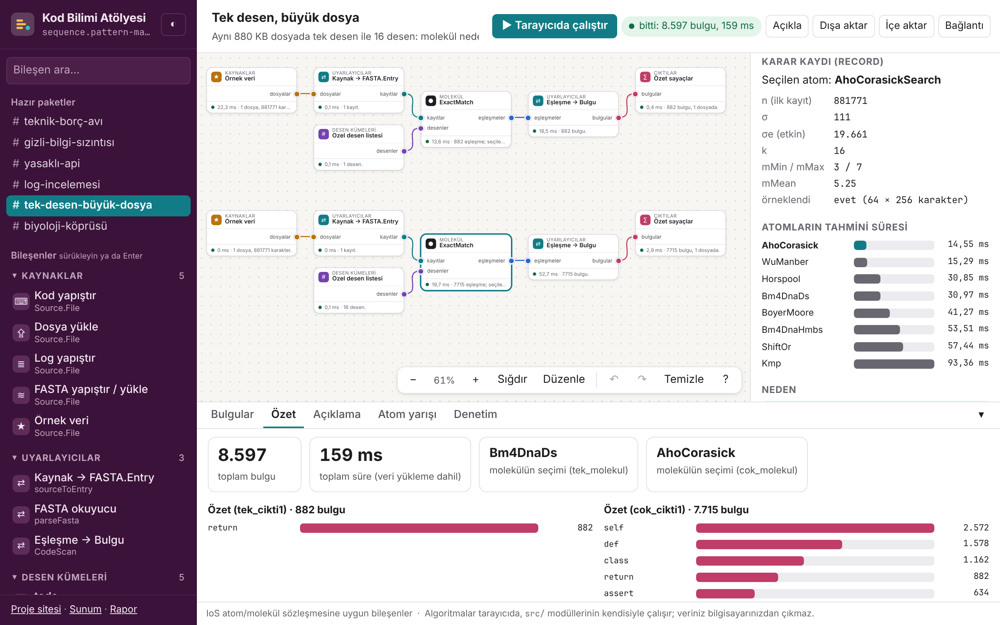
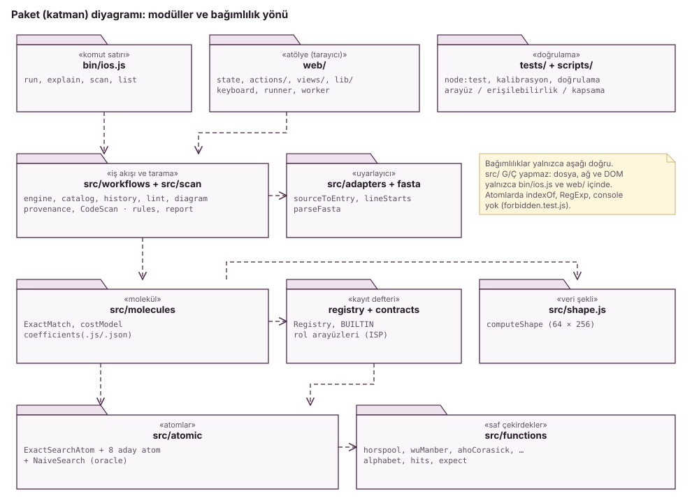
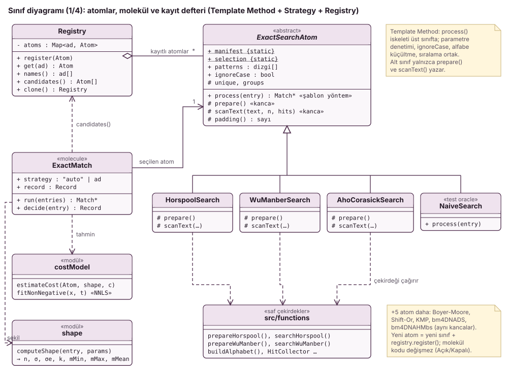
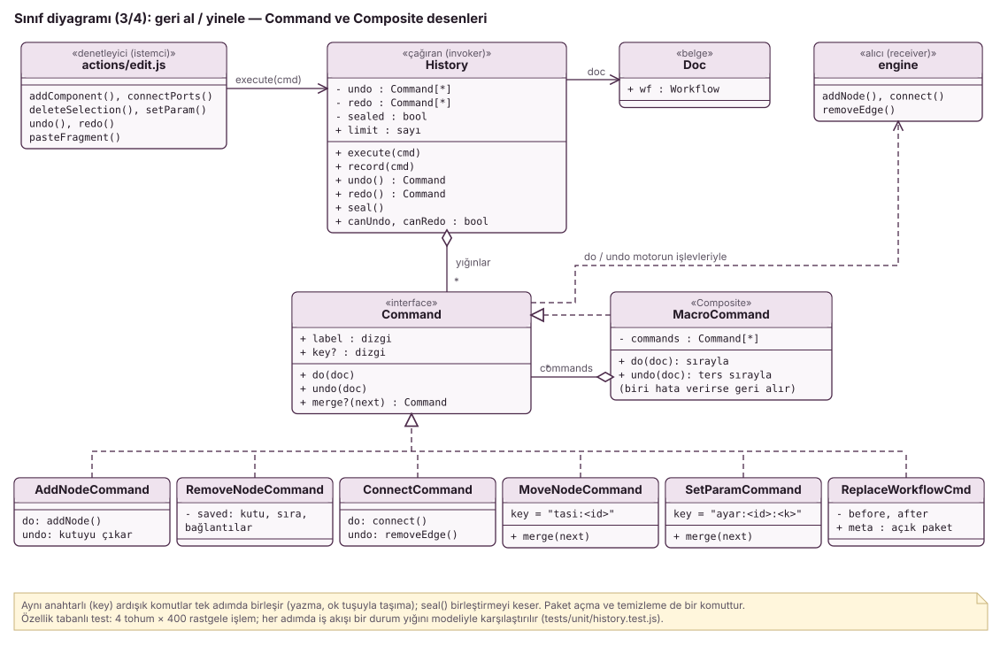

YZM327 · Vize projesi · Sunum rehberi
Kod Bilimi Atölyesi:
akıllı tam desen eşleştirme
Bu belge 10 dakikalık sunumu taşımak için hazırlandı: önce ne söyleyeceğin, sonra projede hangi yazılım mühendisliği ilkesinin nerede ve hangi kanıtla uygulandığı, diyagramlarıyla.
10 dakikalık akış
| Dakika | Konu | Tek cümleyle söyleyeceğin | Sayfa |
|---|---|---|---|
| 0 – 1 | Problem ve fikir | "Hiçbir arama algoritması her durumda en hızlı değil; girdiye bakıp doğrusunu kendisi seçen bir bileşen yazdık." | 2 |
| 1 – 2 | Mimari | "Saf bir çekirdek (algoritmalar, molekül, iş akışı motoru) ve onu kullanan iki ince kabuk: tarayıcıdaki atölye ve komut satırı." | 3 |
| 2 – 4 | SOLID ilkeleri | "Beş ilkenin her biri kodda bir yere karşılık geliyor ve her birini bir test kanıtlıyor." | 4 |
| 4 – 6 | Tasarım desenleri | "Desenleri süs için değil, somut bir sorunu çözmek için kullandık: yeni atom, geri al, arayüzün güncellenmesi." | 5 – 6 |
| 6 – 8 | Test ve kalite kapıları | "506 test var; testlerin gerçekten hata yakaladığını da ölçtük: koda koyduğumuz 36 hatanın 36'sı yakalandı." | 7 – 8 |
| 8 – 9 | Sonuç ve sınırlar | "Çok desende seçici, en iyi tek atomdan iyi; tek desende değil, bunu açıkça yazdık." | 2, 9 |
| 9 – 10 | Süreç ve kapanış | "Her karar gerekçesiyle kayıtlı, her sayı bir komut çıktısından; sorularınızı alalım." | 9 |
Bu belgedeki bütün sayılar projede çalıştırılan komutların çıktısından alındı ve scripts/sayi-denetimi.js ile denetlendi. Sarı köşeli parantezli alan grup tarafından doldurulacak.
1. Proje bir bakışta
Problem: Bir metinde (genom, protein, kaynak kod, log) bir ya da birçok desenin geçtiği bütün yerleri bulmak. Onlarca algoritma var ama hiçbiri her durumda en hızlı değil: kısa desende iyi olan uzun desende, tek desende iyi olan çok desende geri kalıyor.
Çözüm: Internet of Science (IoS) fikrini izleyen üç katman: atom (tek bir algoritma), molekül (aynı işi yapan atomlardan girdiye göre seçen bileşen), iş akışı (bileşenleri birbirine bağlayan düzen).
Sonuç (kalibrasyonda hiç kullanılmamış, birer kez ölçülen taze kümeler)
| Küme | Molekülün seçtiği atom | Karşılaştırma |
|---|---|---|
| Çok desen (D, 120 vaka) | %76,7 vakada en hızlı atom; ortalama yavaşlama 1,051 (en hızlıdan yaklaşık %5 yavaş), en kötü 2,00× | Hep Wu-Manber 1,131 · Allmer 2016 kuralı 2,543 |
| Tek desen (E, 120 vaka) | Seçilen atomla 1,081; karar süresi dahil (uçtan uca) 1,300 | Hep Horspool 1,198 · Allmer kuralı 1,192 |

2. Mimari: saf çekirdek, ince kabuk
Algoritmalar, molekül ve iş akışı motoru src/ altında; dosya, ağ ya da ekranla hiç uğraşmazlar (G/Ç yok). Dosya okuma bin/ios.js'te (komut satırı), ekran web/'de (atölye). Bu yüzden aynı kod Node'da, tarayıcıda ve Web Worker'da değiştirilmeden çalışır; atölye algoritmaları kopyalamaz.

Gereksinimden teste izlenebilirlik (örnekler)
| # | Gereksinim | Kanıt |
|---|---|---|
| İG1 | Bir ya da çok desenin bütün geçişleri, örtüşenler dahil | 117 sözleşme testi her atoma; 360 rastgele vakada referansla birebir |
| İG3 | Molekül değişmeden yeni atom eklenebilmeli | Sahte atom testleri (molekül ve atölye) |
| İG7 | Değişiklikler geri alınıp yinelenebilmeli | Özellik tabanlı test: 4 × 400 rastgele işlem |
| İOG1 | Node 22+, npm paketi yok; atomlarda hazır arama işlevi yok | Yasaklı işlev taraması (forbidden.test.js) |
| İOG5 | Paylaşılan iş akışı sayfaya kod sokamamalı | Arayüz denetiminde XSS ve CSP kontrolleri |
İG: işlevsel gereksinim (sistem ne yapar). İOG: işlevsel olmayan gereksinim (nasıl yapar: hız, güvenlik, erişilebilirlik). Tam tablo raporda (Ek C.1).
3. SOLID ilkeleri: nerede ve kanıtı ne?
STek sorumluluk
Her modülün değişmek için tek bir nedeni olmalı.
web.test.js her arayüz dosyasının 450 satırın altında kaldığını denetler.OAçık / kapalı
Genişlemeye açık, değişikliğe kapalı: yeni özellik eski kodu değiştirmeden eklenir.
LYerine geçebilme (Liskov)
Bir alt sınıf, üst sınıfın beklendiği her yerde sorunsuz kullanılabilmeli.
IArayüz ayrımı
Kimse kullanmadığı bir yönteme bağımlı olmamalı: büyük arayüz yerine küçük roller (kesikli çizgi: rolü uygular).
src/contracts.js tanımlar. Seçim bilgisi olmayan atom kaydolur ama "auto" adayı olmaz (test). Derleme anında da denetlenir: bozuk bileşen için 11 olumsuz kontrol tür hatası verir.DBağımlılığın tersine çevrilmesi
Üst seviye kod alt seviye ayrıntılara değil, soyutlamalara bağlı olmalı; ayrıntılar dışarıdan verilir.
Molekül somut atomları import etmez: kayıt defteri, katsayılar, katalog ve hatta saat (ctx.now) dışarıdan verilir.
4. Tasarım desenleri: hangi sorunu çözdüler?
| Desen | Projede nerede | Çözdüğü sorun |
|---|---|---|
| Template Method | ExactSearchAtom.process iskeleti; her atom yalnızca arama adımını yazar | Girdi denetimi, büyük/küçük harf, çıktı sırası 8 atomda tekrar yazılmaz |
| Strategy | Atomlar birbirinin yerine geçen stratejiler; molekül birini seçer | Algoritma çalışma anında, girdiye göre değişir |
| Registry (kayıt defteri) | src/registry.js | Yeni atom eklemek için molekülü değiştirmek gerekmez |
| Adapter (uyarlayıcı) | sourceToEntry: kaynak dosya → FASTA kaydı | DNA için yazılmış atomlar hiç değişmeden kod ve log tarar |
| Command + Composite | Geri al / yinele (history.js); çok adımlı işlem tek komut | Her değişiklik geri alınabilir; yapıştırma tek Ctrl+Z ile geri gelir |
| Observer (olay yolu) | web/lib/bus.js: durum değişince görünümler haber alır | Denetleyici görünümleri tanımaz; yeni görünüm eklemek kolay |
| Facade (cephe) | web/actions.js: arayüzün tek kapısı | Görünümler karmaşık alt modülleri bilmez |
| Humble Object (görünüm modeli) | web/lib/view-models.js: ekrana yazılacak metin ve sıra saf işlevlerde | Arayüz mantığı tarayıcı açmadan test edilir |

Adapter: DNA atomları kodu nasıl tarıyor?
Command + Composite: geri al / yinele

do() ve tersi undo() vardır. Birden çok adımlı işlem (ör. yapıştırma) MacroCommand içinde tek komut olur (Composite).Observer + Facade: arayüz nasıl güncelleniyor?
5. Diğer yazılım mühendisliği ilkeleri
| İlke | Projede |
|---|---|
| DRY (kendini tekrarlama) | Komut satırı ve atölye aynı süzgeç, aynı SARIF işlevini kullanır; "komut satırı = atölye" testleri bunu gösterir. Belgelerdeki sayılar elle yazılmaz, ölçüm dosyalarından gelir. |
| KISS / YAGNI (basit tut, gerekmeyeni yazma) | Hiç npm paketi yok; npm test temiz kopyada kurulumsuz çalışır. Düzenli ifade (regex) tabanlı kurallar bilerek eklenmedi: proje tam eşleştirme üzerine. |
| Hızlı hata (fail-fast) | Eksik üyesi olan bileşen kayıt anında, uyumsuz uçlar bağlanmadan önce, nedeniyle reddedilir. |
| Sorumlulukların ayrılması | Saf çekirdek (src/) / ince kabuk (bin/, web/); arayüz mantığı görünüm modellerinde. |
| Güvenli tasarım | Metin hiçbir zaman HTML olarak yazılmaz (textContent, XSS testi); İçerik Güvenliği Politikası (CSP); taramada gizli değerler maskelenir; CodeQL. |
| Erişilebilirlik | WCAG 2.1 AA: renk karşıtlığı, ekran okuyucu adları, yalnızca klavyeyle kullanım. 20 taramada 0 engelleyici ihlal (ilk ölçümde 25). |
| Yeniden üretilebilirlik | Tohumlu (seed) rastgele veri; doğrulama kümeleri bir kez ölçülür; çalıştırma kaydı bileşen sürümlerini ve girdilerin SHA-256 özetini tutar. |
| Dürüst ölçüm | Model kalibrasyon kümesinde ayarlandı, ayrı ve taze kümelerde bir kez ölçüldü; kötü sonuçlar (tek desen) silinmedi, sınır olarak yazıldı. |
6. Test stratejisi
Referans uygulama (oracle) yöntemi
Hızlı ama karmaşık her atomun çıktısı, yavaş ama doğruluğu apaçık NaiveSearch'ün çıktısıyla eleman eleman karşılaştırılır.
Örnek: Bir hesap makinesinin sonucunu elle yapılan toplamayla denetlemek gibi. Elle yapmak yavaştır ama yanlış olma ihtimali çok düşüktür.
Mutasyon testi: testler hata yakalıyor mu?
Koda bilerek küçük hatalar konur (< yerine <=, kaymayı bir artırmak, metni innerHTML ile yazmak…) ve testlerin kalıp kalmadığına bakılır.
36 hatanın 36'sı yakalandı. İlk turda biri kaçmıştı; sebep testteydi, test güçlendirildi.
Özellik tabanlı test
Birkaç elle seçilmiş örnek yerine yüzlerce rastgele girdi üretilir ve her birinde bir özelliğin tuttuğu denetlenir.
Örnek: geri al / yinele 4 tohumla 400'er rastgele düzenleme işlemi yapılarak sınanır; her adımda sonuç basit bir durum modeliyle karşılaştırılır.
Negatif kontrol
Bir denetimin gerçekten çalıştığını göstermek için hata bilerek geri konur ve denetimin kaldığı görülür.
Örnek: Yasaklı işlev taraması kendisine verilen kötü örnekleri yakaladığını da sınar. Bozuk bir bileşen için yazılan 11 olumsuz kontrol de derleme hatası verir.
7. Kalite kapıları ve sürekli entegrasyon (CI)
8. Süreç: nasıl çalıştık?
- Sürüm denetimi (Git): Her özellik ayrı commit; açıklama neyin neden değiştiğini söyler. Geçmiş, ölçümlerin hangi kodla alındığını gösterir.
- Karar kaydı (
KARARLAR.md): Her tasarım kararı gerekçesiyle ve alternatifleriyle yazıldı; yanlış çıkan kararlar da silinmedi. - Değişiklik günlüğü ve sürümler:
CHANGELOG.md, Anlamsal Sürümleme (1.0.0); maliyet modelinin kendi sürümleri (v1 → v4) ayrı tutuldu. - Benzer projeler: GitHub'da yıldıza göre 71 ilgili depo incelendi (n8n, ComfyUI, ripgrep, gitleaks, semgrep…); alınan ve bilerek alınmayan fikirler gerekçesiyle yazıldı.
- UML: 10 diyagram: kullanım durumu, 4 sınıf, 4 sıralı, 1 paket diyagramı (
docs/uml/UML_Diyagramlari.pdf). - Yapay zekâ kullanımı: Ders politikası serbest bırakıyor; kod, testler ve belgeler bir yapay zekâ kodlama aracıyla (Claude Code) üretildi ve bu açıkça yazıldı. Bütün sayılar çalıştırılan komutlardan.
9. Sınırlar (dürüstçe)
- Tek desen: Molekül uçtan uca hep Horspool'un ve Allmer kuralının gerisinde (1,300'e karşı 1,198 ve 1,192).
- Karar ilk kayda göre: Sözleşme bunu istiyor; ilk dosya küçükse seçim kötü olabilir.
- Ölçüm: Farklı makinelerde alınan v3 ve v4 ölçümleri doğrudan karşılaştırılamaz; bu raporda yazılı.
- Arayüz: Sürükleme ve yakınlaştırma gibi tuval etkileşimleri birim testli değil; yalnızca gerçek tarayıcıdaki 56 denetimle sınanıyor.
10. Olası sorular ve kısa yanıtlar
| Soru | Yanıt |
|---|---|
| Neden kural tabanlı değil de maliyet modeli? | Yeni atom eklenince eşikleri elle yeniden düşünmek gerekmiyor; atom kendi özelliklerini verir, kalibrasyon katsayıları bulur, molekül değişmez. |
| Doğrulama kümesine bakıp modeli düzelttiniz mi? | Hayır. Katsayılar yalnızca kalibrasyon verisiyle bulundu; her model sürümü yeni ve taze bir kümede yalnızca bir kez ölçüldü. |
| Hep Wu-Manber kullansak? | Çok desende hayır: 1,131'e karşı 1,051. Tek desende ise dürüst cevap evet; bunu sınır olarak yazdık. |
Atomlarda hazır indexOf kullanmadığınızı nasıl biliyoruz? | forbidden.test.js kaynakları tarar (indexOf, RegExp, console, saat, rastgelelik…); taramanın kötü örnekleri yakaladığını da ayrıca sınar. |
| Testler gerçekten hata yakalıyor mu? | Mutasyon denetimi: koda konan 36 küçük hatanın 36'sı yakalandı. |
| Yeni bir atom nasıl eklenir? | ExactSearchAtom'dan türeyen bir sınıf, kayıt defterine bir satır, sonra npm run calibrate. Atölyede kendiliğinden kutu olarak görünür. |
| Atölye algoritmaları kopyalıyor mu? | Hayır; tarayıcı src/ modüllerini doğrudan içe aktarır. Altı hazır paketin her birinde atölye ile komut satırı aynı sayıda bulgu verir. |
| SOLID nerede? | Sayfa 4: her ilke bir yerde ve bir testle (tek sorumluluk: 450 satır sınırı; açık/kapalı: sahte atom; Liskov: 117 sözleşme testi; arayüz ayrımı: roller; bağımlılığın tersine çevrilmesi: dışarıdan verilen kayıt defteri). |
Terimler sözlüğü
- Atom / molekül
- IoS'ta atom tek bir dönüşümdür (burada tek bir arama algoritması); molekül aynı işi yapan atomlardan girdiye göre seçim yapan bileşendir.
- Maliyet modeli
- Her atomun bir girdide ne kadar süreceğini tahmin eden formül; katsayıları ölçümlerden (kalibrasyon) bulunur.
- Kalibrasyon / doğrulama
- Kalibrasyon modeli ayarlamaktır; doğrulama, ayarlanmış modeli hiç görmediği verilerde ölçmektir.
- Geometrik ortalama yavaşlama
- Seçilen atomun süresinin o vakadaki en hızlı atomun süresine oranı, vakalar üzerinde çarpımsal ortalama. 1 = her seferinde en hızlıyı bulmak.
- SOLID
- Beş tasarım ilkesinin baş harfleri: tek sorumluluk, açık/kapalı, yerine geçebilme, arayüz ayrımı, bağımlılığın tersine çevrilmesi.
- Tasarım deseni
- Sık karşılaşılan bir tasarım sorununa denenmiş, adı konmuş çözüm kalıbı (ör. Strategy, Command).
- Kayıt defteri (registry)
- Bileşenlerin adıyla kaydolduğu liste; kullanan kod bileşenleri tek tek tanımadan listeden alır.
- Uyarlayıcı (adapter)
- Uyumsuz iki arayüzü birbirine bağlayan ara katman.
- Olay yolu (event bus)
- Bir değişikliği, onu dinleyen herkese duyuran ortak kanal (Observer deseni).
- Birim testi
- Kodun tek bir parçasını diğerlerinden ayrı sınayan küçük test.
- Kapsama (coverage)
- Testlerin çalıştırdığı kod satırlarının ve dallarının oranı.
- Mutasyon testi
- Koda bilerek hata koyup testlerin yakalayıp yakalamadığını ölçmek; testlerin kalitesini gösterir.
- Özellik tabanlı test
- Çok sayıda rastgele girdide bir özelliğin her zaman doğru kaldığını denetleyen test.
- Referans uygulama (oracle)
- Yavaş ama doğruluğu apaçık bir uygulama; hızlı uygulamaların çıktısı onunkiyle karşılaştırılır.
- Sürekli entegrasyon (CI)
- Her gönderimde testlerin ve denetimlerin kendiliğinden çalışması.
- Statik tür denetimi
- Kodu çalıştırmadan, yanlış alan adı ya da eksik argüman gibi hataları bulmak.
- WCAG
- Web erişilebilirliği ölçütü: renk karşıtlığı, ekran okuyucu, klavyeyle kullanım.
- XSS / CSP
- XSS: sayfaya dışarıdan kod sokulması saldırısı. CSP: tarayıcıya hangi betiklerin çalışabileceğini söyleyen güvenlik politikası.
- SARIF
- Tarama sonuçları için ortak dosya biçimi; GitHub'ın güvenlik ekranı bunu okur.
- Web Worker
- Tarayıcıda ağır işi arka planda çalıştıran iş parçacığı; arayüz donmaz.
Ayrıntılar: rapor (docs/rapor/Rapor.pdf), UML diyagramları (docs/uml/UML_Diyagramlari.pdf), sorular için docs/sunum.md, her bölümün anlatımı için docs/anlatim.md.